cross
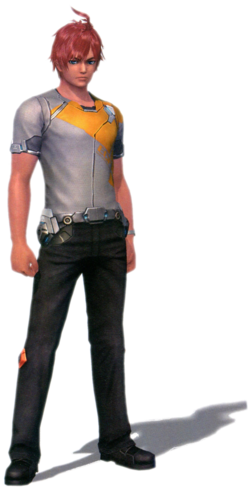Cross (クロス, Kurosu) is a default name given to the Avatar, the customizable playable character of Xenoblade Chronicles X. He or she is created by the player and exists through the choices made during the game. He or she is sometimes referred to by other characters as "Rook".
elma

Elma (Japanese: エルマ, Eruma; English dub: /ˈɛl.mə/) is one of the eight main playable characters of Xenoblade Chronicles X. She is the central protagonist of the main story. She is a BLADE colonel and the team leader of the Reclaimers Division. In the prologue, she is tasked with retrieving the Lifepods that were ejected from the United States Ark Ship, the White Whale. She is the first party member to join Cross after waking him or her from his or her Lifepod. Prior to Earth's destruction, she served as the colonel of the Coalition Heavy Armor Training Unit, or the "Skelleton Crew". She was a subordinate to the unnamed hero who repelled the attack on the White Whale as it crashed on Mira.
Lin
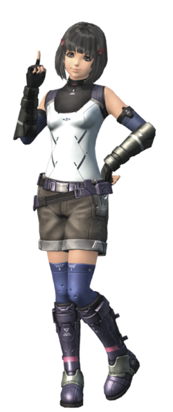Lin is the second scripted party member to be revealed after Elma. She is described as a genius and is an expert engineer at BLADE. She is a member of the Outfitters Division, involved in the development of the Skells. Lin joins the party after meeting her during Chapter 1.
Doug
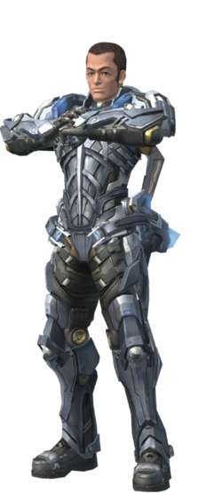Doug Barrett (Japanese: ダグ, Dagu; English dub: /ˈdʌɡ ˈbær.ᵻt/) is one of the eight main playable characters of Xenoblade Chronicles X. He is a Harrier and a member of the private military organization BLADE. He excels at all military skills, but is the most effective when it comes to piloting Skells. Doug is recruitable after Chapter 3.
Lao
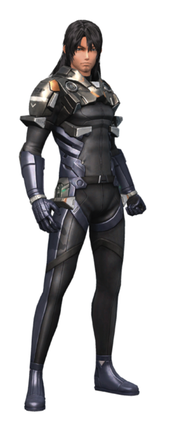Lao Huang (Japanese: ラオ, Rao; English dub: /ˈlaʊ ˈhwæŋ/) is one of the eight main playable characters in Xenoblade Chronicles X. He is the leader of the Pathfinder Team Belisarda (English dub: /ˌbɛl.ᵻˈsɑː(r).də/) of the private military organization BLADE. Lao has been Doug's comrade-in-arms since their days in the United States Army. He has a mutual deep relationship with Lin, who shares a similar past.
Gwin
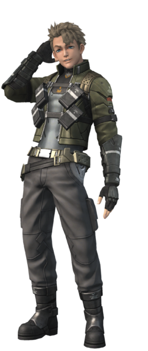Gwin Evans (Japanese: グイン, Guin; English dub: /ˈɡwɪn ˈɛv.ənz/) is one of the eight main playable characters of Xenoblade Chronicles X. He is an Interceptor in BLADE, and was Elma and Irina's subordinate in the Unified Government Forces Special Vehicle Guidance Squad. He joined BLADE to honor his late friend Leon, and for his desire to protect Irina. Gwin is recruitable after Chapter 3
Irina
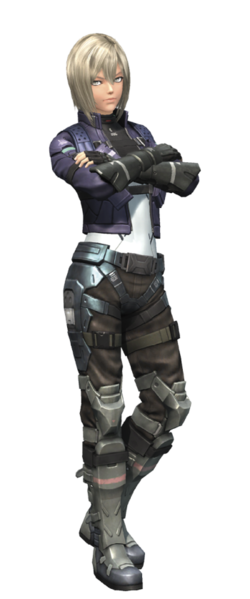Irina Akulov (Japanese: イリーナ・アクロフ, Irina Akurofu; English dub: /ᵻˈriː.nə ˈæk.ᵿˌlɔːf/) is one of the eight main playable characters of Xenoblade Chronicles X. She is a team leader within the Interceptors Division, and a member of BLADE. Irina becomes recruitable after Chapter 3.
L
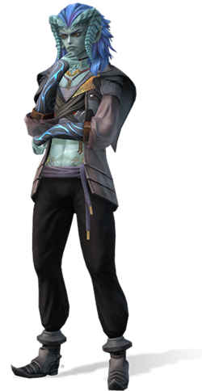L (Japanese: ルー, Rū; English dub: /ˈɛl/), full name L'cirufe (Japanese: ル・シルフェ, Ru Shirufe; English dub: /ˌɛlˈsɪr.ᵿf/), is one of the eight main playable characters in Xenoblade Chronicles X. He is an inventor indigenous to Mira who sells his crafts to the Nopon and other natives in exchange for food. L's affiliation to BLADE's Divisions is stated as a Wanderer; he assists the BLADE members from time to time
Alexa
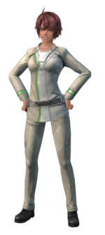Alexa (アクセナ, Akusena, Axena; English dub: /əˈlɛk.sə/) is a recruitable character in Xenoblade Chronicles X. She is an Outfitter. She worked in the development of new weapons for the Skells in the private military organization BLADE.
Bozé
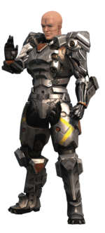Bozé Lowes (Japanese: ボゼ・ロウズ, Boze Rōzu; English dub: /ˈboʊˈzeɪ ˈloʊz/) is a recruitable character in Xenoblade Chronicles X. He is a Harrier instructor of the private military organization BLADE.
Celica
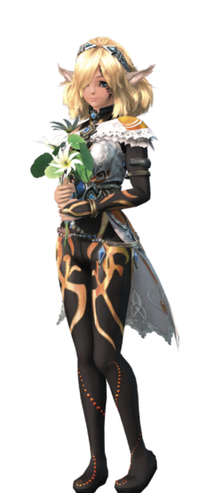Celica (Japanese: セリカ, Serika; English dub: /ˈsɛl.ᵻ.kə/) is a recruitable playable character in Xenoblade Chronicles X. She is a Qlurian and a friend of Rock. She is first met during the mission Manhunt. After the party completes New in New LA, Celica becomes a member of the Prospectors Division within the private military organization BLADE, as well as a recruitable character.
Frye
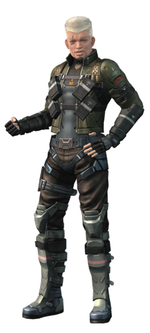Frye Christoph (Japanese: フライ, Furai; English dub: /ˈfraɪ ˈkrɪsˌtɔːf/) is a recruitable playable character in Xenoblade Chronicles X. He is an Interceptor and a member of the private military organization BLADE. He is Phog's older brother. He likes to undertake missions that most operatives bend over backwards to avoid. This daring trait has earned him the unusual nickname of the "Killer Ostrich".
H.B.
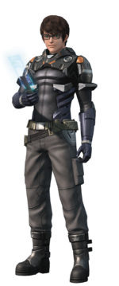Hector Birtwhistle, known as H.B., is a recruitable character in Xenoblade Chronicles X. He is a young Pathfinder elite of the private military organization BLADE. In the Japanese versions, this mission is obtainable from a DLC.
Hope
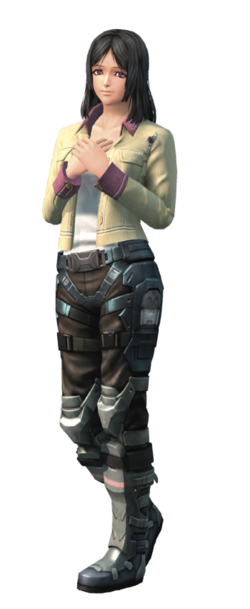Hope Alanzi (Japanese: ヒメリ・アランジ, Himeri Aranji; English dub: /ˈhoʊp əˈlɑːn.zi/) is a recruitable playable character in Xenoblade Chronicles X. She is a Mediator and a member of the private military organization BLADE.
Mia
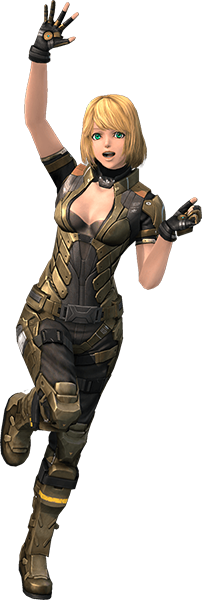Mia (Japanese: ミーア, Mīa; English dub: /ˈmiː.ə/) is a recruitable playable character in Xenoblade Chronicles X. She is a Curator and a member of the private military organization BLADE.
Murderess
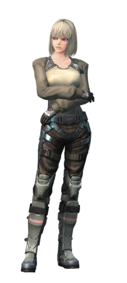Murderess (Japanese: マードレス, Mādoresu; English dub: /ˈmɜːrdərᵻs/ or /ˌmɜːrdərˈɛs/), originally Sharon Effinger (Japanese: シャロン・B・エフィンジャー, Sharon B Efinjā; English dub: /ˈʃærən ˈɛfᵻndʒər/ or /ˈɛfɪŋdʒər/), is a recruitable playable character in Xenoblade Chronicles X. She is a Curator and a member of the private military organization BLADE.
Nagi
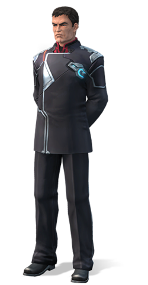Kentaro Nagi or Secretary Nagi (Japanese: ナギ・ケンタロウ, Nagi Kentarō; English dub: /ˌkɛnˈtɑːrˌoʊ ˈnɑː.ɡi/) is a recruitable playable character in Xenoblade Chronicles X. He was the former captain of the White Whale and serves as the Secretary of Defense in the autonomous government of New Los Angeles. He works himself tirelessly dealing with government affairs. As the party leader, the specific division name for Nagi is NLA Defense Secretary.
Phog
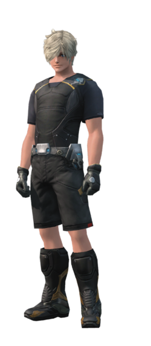Phog Christoph (Japanese: フォグ・クリストフ, Fogu Kurisutofu; English dub: /ˈfɔːɡ ˈkrɪsˌtɔːf/) is a recruitable playable character in Xenoblade Chronicles X. He is a Prospector and a member of the private military organization BLADE. He is Frye's younger brother.
Yelv
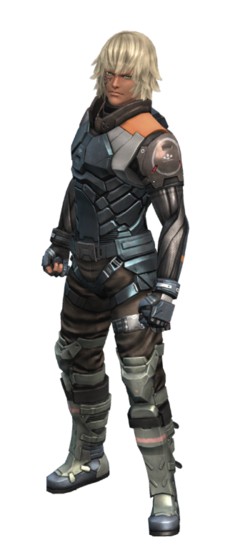Yelv (Japanese: イエルヴ, Ieruvu, Yelve; English dub: /ˈjɛlv/) is a recruitable character in Xenoblade Chronicles X. He is a young Reclaimer in the private military organization BLADE.